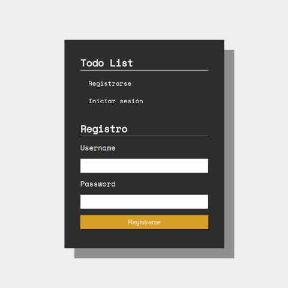
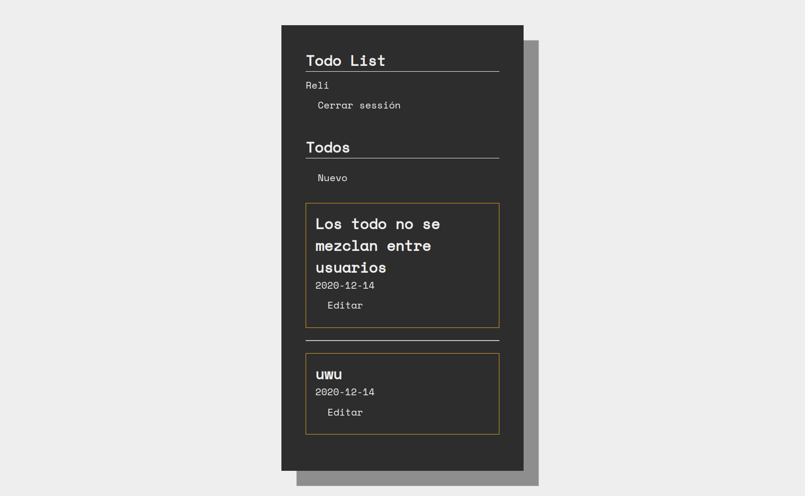

# TODO: Make borgar button fixed!
This is my first time working with Flask and MySQL! and I think this is going well, it was a really really interesting experience.
I choise a todo-list because is the most common project to test stuff, and definitively I learned a lot about MySQL these days, and my previous experience with MongoDB and React.JS, maked this project was really commfy, I did it in something like 10 hours in a row, and, I'm fine with the final result.
I will make a lot of future changes to this, the CSS is the thing where I dedicated less time in this project, so, it's really bad right now, also, I think the connection to the dabase can be more secure, but that isn't a real big problem right now, because I don't plan to put it in a public server or something lie that, it's just a test and for personal use.
Anyway, as always, if you want you can take a look at it, you can go to the git repo!